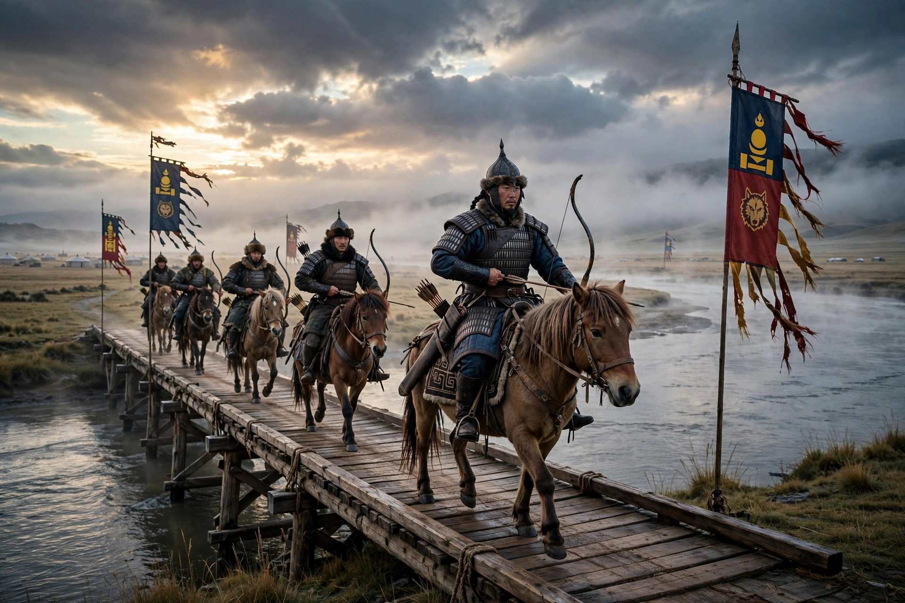

The Battle of Mohi (11 April 1241), also known as the Battle of the Sajó River, was the main battle between the Kingdom of Hungary and the Mongol Empire during the Mongol invasion of Europe. It took place at Muhi, southwest of the Sajó River, in present-day Hungary. The Mongols, commanded by Batu Khan and Subutai, decisively defeated the Hungarian army of King Béla IV, destroying much of Hungary's military strength and leaving the kingdom devastated.
| Battle of Mohi | |
|---|---|
 Mongol forces at the Sajó River | |
| Date | 11 April 1241 |
| Location | Muhi, Kingdom of Hungary |
| Result | Decisive Mongol victory |
| Belligerents | Kingdom of Hungary vs Mongol Empire |
| Commanders | Béla IV of Hungary; Batu Khan and Subutai |
After conquering the principalities of Kievan Rus' in 1237–1240, the Mongols planned a coordinated invasion of Central Europe. Batu Khan led the main army through the Verecke Pass into Hungary, while other columns struck Poland, culminating in the Battle of Legnica two days before Mohi. King Béla IV gathered his forces near Pest and advanced to the Sajó River, where the Hungarians fortified the bridge at Mohi and encamped on the western bank.
On the night of 10–11 April, the Mongols attacked the bridge with their vanguard. The Hungarians initially repelled the assault, but Subutai had meanwhile crossed the river downstream on rafts and bridges of boats, encircling the Hungarian camp. Mongol catapults and stone-throwers bombarded the camp, and horse archers shot into the packed tents. When the Hungarian knights charged out, they were drawn into a feigned retreat and cut down. The Mongols deliberately left a gap in their encirclement through which the Hungarians fled, and then hunted them down over several days of pursuit.
Hungarian losses were catastrophic — perhaps tens of thousands of soldiers, including much of the nobility and senior clergy. Béla IV escaped to Austria and then to the Dalmatian coast. The Mongols occupied the Great Hungarian Plain and raided as far as the Adriatic, but withdrew in 1242 following the death of Ögedei Khan. The devastation prompted Béla to rebuild Hungary with stone castles and new military reforms.
Battle of Legnica · Mongol invasion of Europe · Béla IV of Hungary · Subutai